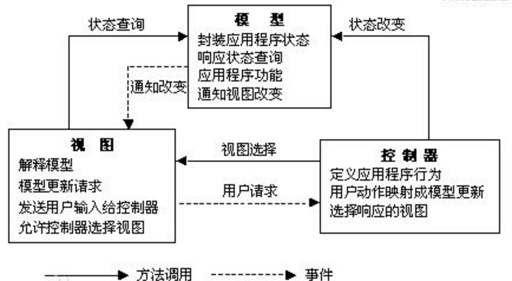
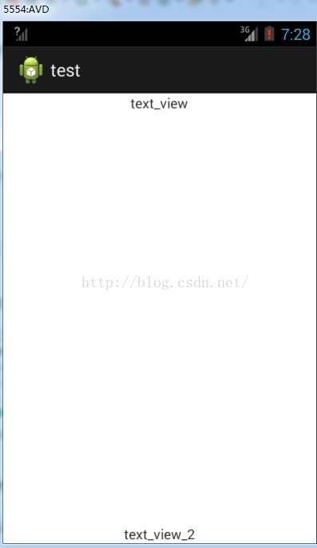
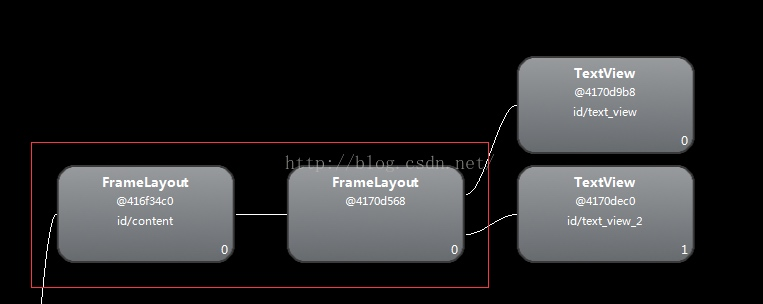
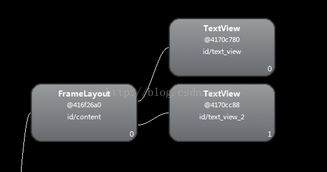

9. Thread、AsycTask、IntentService的使用场景与特点
Thread、AsyncTask和IntentService都与多线程有关，当我们在Android中涉及并发编程时（进行网络请求、加载较大的文件等操作）就需要使用。
Thread
Java中的子线程，可以通过传入Runnable接口或继承Thread重写run方法新建。
AsyncTask
由Java线程池改造的异步任务工具
IntentService
Android四大组件之一的Service默认是在主线程中运行的，IntentService是Service的子类，有如下特点：
1. IntentService会创建单独的worker线程来处理所有的Intent请求
2. 当所有请求处理完成后，IntentService会自动停止
3. 为Service的onBind方法提供了默认实现，返回null
4. 为Service的onStartCommand方法提供了默认实现，把请求Intent添加到队列中
实现IntentService的例子如下：
public class MyIntentService extends IntentService {
public MyIntentService(String name) {
super(name);
}
@Override
protected void onHandleIntent(Intent intent) {
// IntentService会创建单独的worker线程来处理此处的代码
}
}
我们只需重写onHandleIntent方法即可，该方法的代码会在一个子线程中运行。
10. 五种布局： FrameLayout 、 LinearLayout 、 AbsoluteLayout 、 RelativeLayout 、TableLayout 各自特点
FrameLayout
FrameLayout即单帧布局，在该布局中的所有空间都会被置于布局的左上角。
LinearLayout
LinearLayout即线性布局，使用该布局必须为其指定orientation属性（排列方向属性，可以设置为水平或垂直的），其中的空间就会根据设置的属性呈水平或垂直排列。
AbsoluteLayout
AbsoluteLayout即绝对布局，对布局中的控件我们使用x，y坐标值进行定位。
RelativeLayout
RelativeLayout即相对布局，在其中的控件可以相对于父布局或布局中别的控件的位置进行定位布局。
TableLayout
TableLayout即表格布局，TableLayout中的每一行的控件由TableRow包含，最终的布局效果会呈现成表格状。
11. Android的数据存储形式
在Android中的数据存储形式主要有以下几种：
SharedPreferrences
SharedPreferrences主要用于存储一些少量的简单的应用程序配置信息。SharedPreferrences以明文键值对的形式把数据存储在一个xml文件上，该文件位于/data/data/
File
Android和Java一样，同样支持使用文件流来保存和访问文件。除了在手机内置存储空间上存储文件外，Android还支持读写SD卡上的文件：只要获取相应的权限后，调用Environment的getExternalStorageDirectory方法即可获取路径。
SQLite数据库
Android系统集成了一个轻量级的数据库：SQLite。SQLite是一个嵌入式数据库引擎，专门适用于资源有限的设备上适量数据的存取。在Android上我们一般使用SQLiteOpenHelper辅助类来操作SQLite数据库。
12. Sqlite的基本操作
SQLite为熟悉SQL语句的程序员提供了相应的函数使用SQL语句，也为不了解SQL语法的程序员提供了简便的增删查改接口：
String path = "数据库路径";
SQLiteDatabase database = SQLiteDatabase.openOrCreateDatabase(path, null);
// 执行sql语句
database.execSQL(sql);
// 执行带占位符的sql语句
database.execSQL(sql, bindArgs);
// 执行查找的sql语句
database.rawQuery(sql, selectionArgs);
// 执行增删查改
database.insert(table, nullColumnHack, values);
database.delete(table, whereClause, whereArgs);
database.query(table, columns, selection, selectionArgs, groupBy, having, orderBy);
database.update(table, values, whereClause, whereArgs);
// 开启事务
database.beginTransaction();
// 确认事务成功
database.setTransactionSuccessful();
// 结束事务
database.endTransaction();
13. Android中的MVC模式
MVC全名是Model View Controller，是模型(model)－视图(view)－控制器(controller)的缩写，一种软件设计典范，用一种业务逻辑、数据、界面显示分离的方法组织代码，将业务逻辑聚集到一个部件里面，在改进和个性化定制界面及用户交互的同时，不需要重新编写业务逻辑。
MVC模式的示意图如下：

Android的设计也使用了MVC模式，其中：
1. View对应于Android的View控件和xml所编写的界面
2. Control对应于Android中的Activity，负责接收用户请求和改变模型状态
3. Model一般由我们自己实现来处理程序功能和逻辑
14. Merge、ViewStub的作用
Merge和ViewStub均为Android中的xml优化标签，用于对Android的View布局进行优化。
Merge
merge标签应用于xml的顶层标签，主要应对于layout嵌套浪费的现象。在Android layout文件中需要一个顶级容器来容纳其他的组件，而不能直接放置多个组件，通过使用merge标签作为顶层容器，我们可以删减多余或者额外的层级，从而优化整个Android Layout的结构。
以下是一个例子：
activity_merge_test.xml：
<?xml version="1.0" encoding="utf-8"?>
<FrameLayout xmlns:android="http://schemas.android.com/apk/res/android"
android:layout_width="match_parent"
android:layout_height="match_parent" >
<TextView
android:id="@+id/text_view"
android:layout_width="match_parent"
android:layout_height="match_parent"
android:gravity="top|center_horizontal"
android:text="text_view"/>
<TextView
android:id="@+id/text_view_2"
android:layout_width="match_parent"
android:layout_height="match_parent"
android:gravity="bottom|center_horizontal"
android:text="text_view_2"/>
</FrameLayout>
MergeTestActivity：
public class MergeTestActivity extends Activity {
@Override
protected void onCreate(Bundle savedInstanceState) {
super.onCreate(savedInstanceState);
setContentView(R.layout.activity_merge_test);
}
}
效果图如下：

由hierarchyviewer分析可得（此处只分析与Activity界面相关的部分）：

由hierarchyviewer得到的View树状图我们可以发现，id为content的FrameLayout中只有LinearLayout一个元素，造成了layout的嵌套浪费（如红框圈出所示）。此处我们若使用merge标签，便可以减少一层layout标签的嵌套，使程序运行得更快更流畅。
xml代码改为如下：
<?xml version="1.0" encoding="utf-8"?>
<merge xmlns:android="http://schemas.android.com/apk/res/android"
android:layout_width="match_parent"
android:layout_height="match_parent" >
<TextView
android:id="@+id/text_view"
android:layout_width="match_parent"
android:layout_height="match_parent"
android:gravity="top|center_horizontal"
android:text="text_view"/>
<TextView
android:id="@+id/text_view_2"
android:layout_width="match_parent"
android:layout_height="match_parent"
android:gravity="bottom|center_horizontal"
android:text="text_view_2"/>
</merge>
效果图没有变化，使用hierarchyviewer分析可得：

此时已经减少了一层layout嵌套，我们通过使用merge标签，达到了优化的目的。
ViewStub
ViewStub即占位符，用于处理动态觉得显示某个View的情况。在开发应用程序的时候，我们经常会在运行时动态根据条件来决定显示哪个View或某个布局。那么最通常的想法就是把可能用到的View都写在上面，先把它们的可见性都设为View.GONE，然后在代码中动态的更改它的可见性。这样的做法的优点是逻辑简单而且控制起来比较灵活。但是它的缺点就是，耗费资源。虽然把View的初始可见View.GONE但是在Inflate布局的时候View仍然会被Inflate，也就是说仍然会创建对象，会被实例化，会被设置属性。也就是说，会耗费内存等资源。而使用ViewStub的话在inflate布局的时候不会被inflate，ViewStub的inflate操作被延迟到了直到我们调用其inflate方法。
ViewStub的xml文件设置如下：
<ViewStub
android:id="@+id/view_stub"
android:inflatedId="@+id/my_view"
android:layout_width="wrap_content"
android:layout_height="wrap_content"
android:layout="@layout/view_view_stub" />
其中，inflateId属性表示ViewStub被inflate后重新被赋予的id值，layout属性指定了调用inflate方法时inflate的具体布局。
找到ViewStub并调用inflate：
ViewStub viewStub = (ViewStub)findViewById(R.id.view_stub);
viewStub.inflate();
值得注意的是：
1. ViewStub只能Inflate一次，之后ViewStub对象会被置为空。按句话说，某个被ViewStub指定的布局被Inflate后，就不会够再通过ViewStub来控制它了。
2. ViewStub只能用来Inflate一个布局文件，而不是某个具体的View。
15. Json有什么优劣势
JSON，即JavaScript Object Notation，是 一种轻量级的数据交换格式，具有良好的可读和便于快速编写的特性。业内主流技术为其提供了完整的解决方案（有点类似于正则表达式 ，获得了当今大部分语言的支持），从而可以在不同平台间进行数据交换。JSON采用兼容性很高的文本格式，同时也具备类似于C语言体系的行为。这些特性使JSON成为理想的数据交换语言。 易于人阅读和编写，同时也易于机器解析和生成(一般用于提升网络传输速率)。
Json优点：
与传统的xml相比，Json有一下优点：
1. 在解码难度方面，XML的解析得考虑子节点父节点，而Json不需要，解析难度较低
2. Json数据的体积小
3. Json的传输速度快于XML
但Json也有它不足之处：
1. 没有XML格式这么推广的深入人心和使用广泛, 没有XML那么通用性
2. 命名空间允许不同上下文中的相同的信息段彼此混合，然而在Json中已经找不到了命名空间